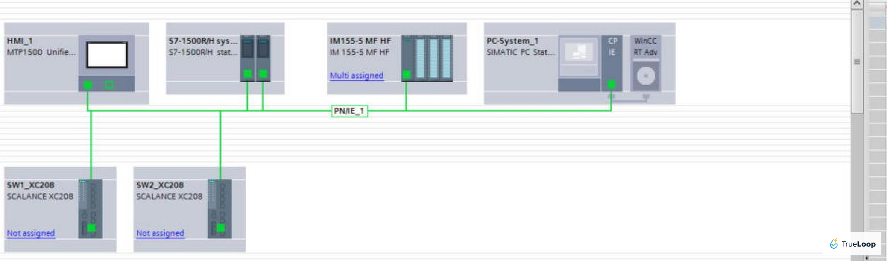
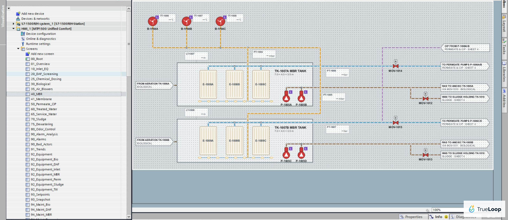
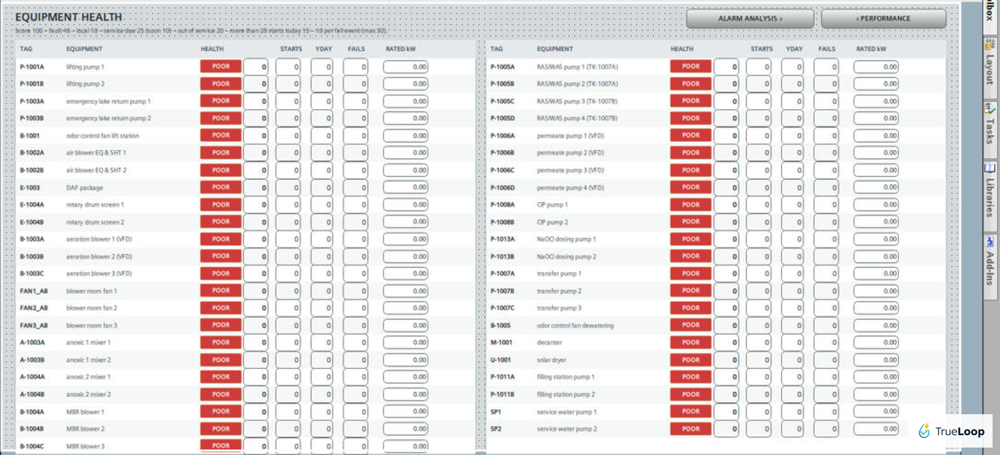
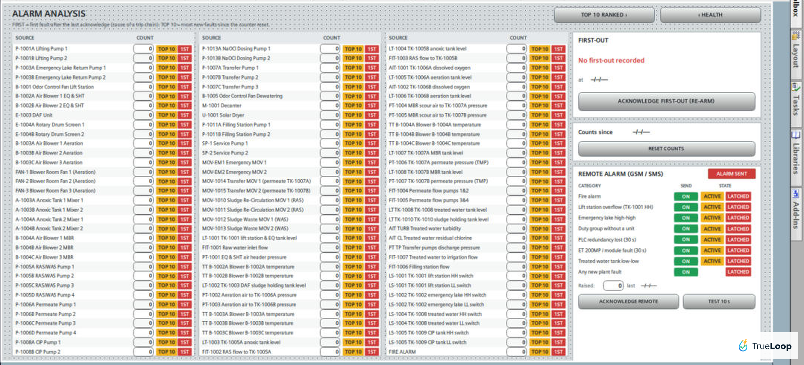
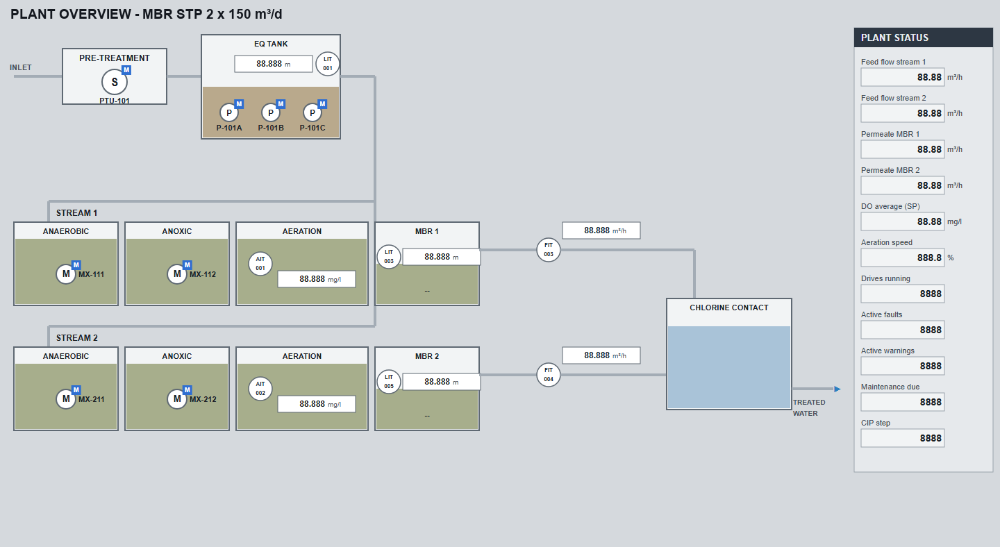
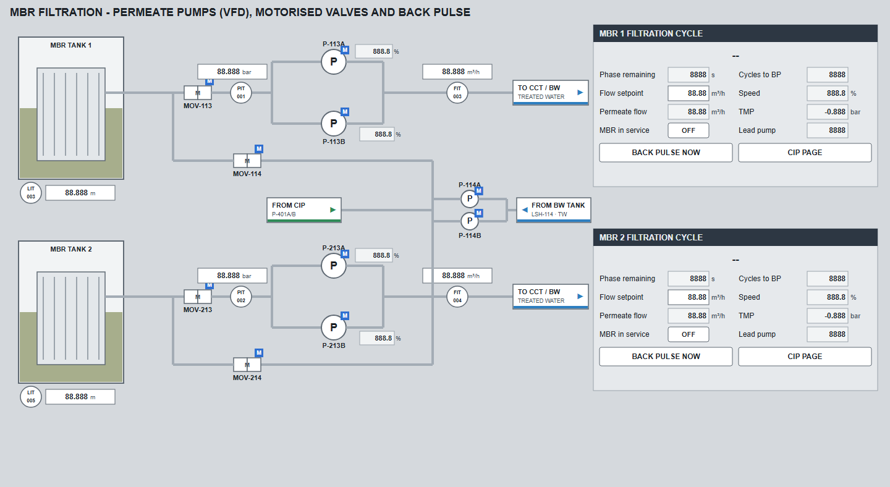
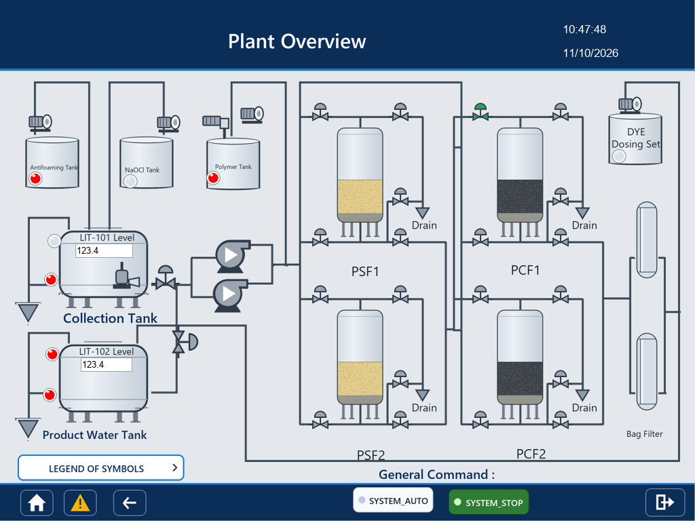
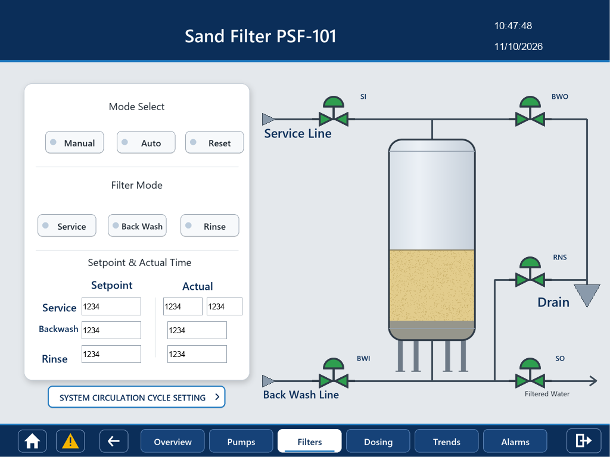

1. MBR sewage treatment plant with a redundant PLC
Siemens S7-1500 R/H, ET 200MP remote I/O, WinCC Unified panel, RT Advanced SCADA PC, two managed switches
A membrane bioreactor plant: lift station, screening, DAF, biological tanks, two MBR tanks, permeate and CIP, sludge handling, odour control. I wrote the PLC program and built the panel and SCADA screens.
- Redundant CPU pair with the remote I/O, panel and SCADA PC on one PROFINET network.
- Process screens for every area, with a faceplate for each motor, valve and analog.
- Equipment health page: a score per drive from faults, starts and service hours.
- Alarm analysis: top 10 sources, first-out after a trip, and a remote alarm by SMS for the critical groups.
- Daily and monthly reports, KPI page, maintenance counters, setpoint snapshot.








2. MBR sewage treatment plant, 2 x 150 m³/d
Siemens S7-1500, WinCC Unified panel, WinCC Unified PC station
Two parallel streams (anaerobic, anoxic, aeration, MBR) with shared inlet works and chlorine contact. PLC program, panel and PC screens.
- MBR filtration cycle per stream: filtration, relaxation and back pulse, flow control on the permeate pump drives.
- CIP sequence, duty and standby rotation, maintenance pages.
- Setpoint, duty and analog scaling pages so the operator does not need the programming laptop.




3. Grey water treatment plant
Schneider M251, touch panel
Collection tank, feed pumps, two sand filters and two carbon filters, bag filters, chemical dosing, product water tank. I worked on the control program and rebuilt the panel screens.
- Filter sequence per vessel: service, backwash and rinse with operator timers, manual and auto modes.
- Pump, dosing and circulation settings pages, alarms and trends.
- Operator training material for the plant.



